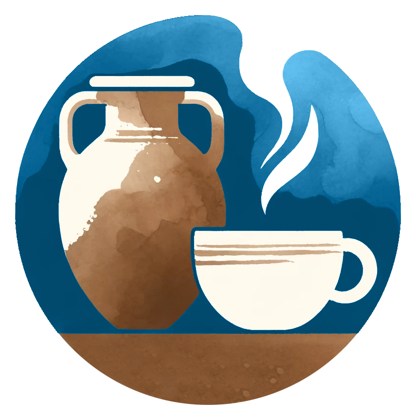

Knowledge management FAIRification tool for conservation and restoration processes
Introduction
Vocabulary
Contact

Contact
Fragen beantworten gern: Lasse Mempel-Länger, Kristina Fella und Nathaly Witt.